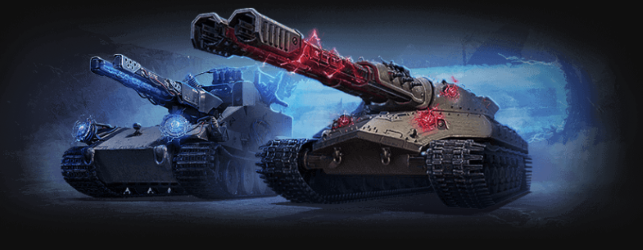
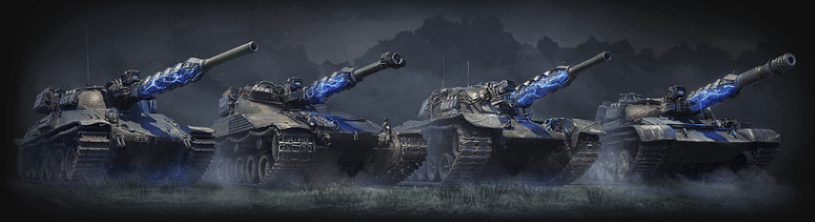
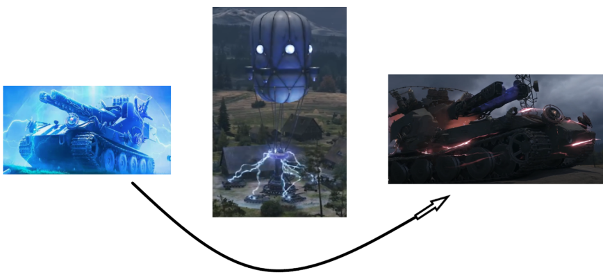
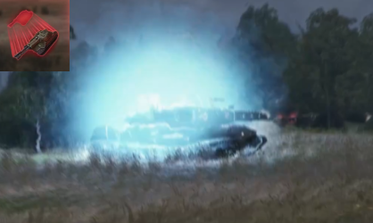
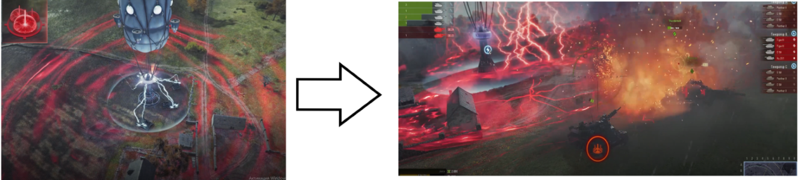

Режим "Ваффентрагер" - особое сражение между танком-боссом (инженером) и шестью стандартными танками (гончими). Задача инженера - выжить до конца боя, задача гончих - успеть уничтожить инженера.
Битвы проходят на кртах случайных боёв, стилизованных под дух сражений с Ваффентрагером:
Доступно два танка-босса: WT и Алаид (слева направо), чтобы выйти в бой на них нужны особые предметы - ключи, которые можно получить как награду или купить.

Машины гончих представлены четырьмя танками - это изменённые пр помощи особых технологий средние танки 10 уровня разных стран (СССР - Об.140, США - M48 Patton, Франция - B-C 25t, Польша - TVP T50/51)

Но бой не так прост, как кажется: босс оснащён щитом, игнорирующим 95% урона, но у щита есть слабость: на карте расположены 3 генератора (A, B и C), каждый генератор защищают от 4 до 6 часовых - немецких танков 8 - 10 уровней под управлением ИИ. После уничтожения часовых гончие должны перегрузить генератор (просто подъехать к нему и ждать до конца отсчёта; чем больше гончих перегружает генератор, тем быстрее), после чего щит инженера отключится на 1 минуту.

Остерегайтесь! Босс время от времени может телепортироваться почти в любую точку карты, следите за оповещениями в верхней части экрана.

Даже если босс недавно телепортировался в другую точку карты, вы всё ещё в опасности: оба босса оснащены ультимативным оружием дальнего действия - Молот/Колокола Карны. Есть лишь один способ спастись, если оно нацелено на вас - бежать. На первом изображении - зарядка оружия (за мгновение до удара), второе изображение - удары Колоколов Карны.

Но и у машин гончих есть навыки, например полный ремонт или ускорители.
Режим доступен раз в год - осенью, в сентябре или октябре.
Теперь вы готовы к бою. Верим в вашу победу!